防禦圖

未防禦的編輯
防禦後的編輯
DISTS 目標 0.04 → 實得 0.03902
半徑 0.01354
fid_dists 0.039
fid_lpips 0.3864
fid_psnr 40.4011
fid_ssim 0.9852
fid_clip_img 0.9867
fid_nima 5.5426
fid_cnniqa 0.7215
edit_lpips 0.543
edit_clip_drop -0.0314
edit_siglip_drop-0.0085
total_seconds 117.6
防禦圖

未防禦的編輯
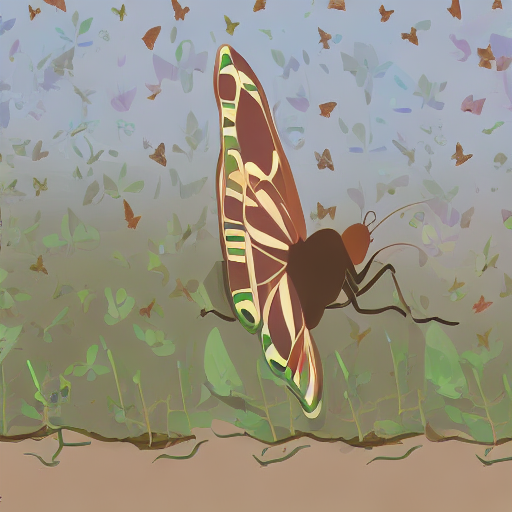
防禦後的編輯
DISTS 目標 0.04 → 實得 0.03922
半徑 1.95809
fid_dists 0.0392
fid_lpips 0.2302
fid_psnr 32.6074
fid_ssim 0.9385
fid_clip_img 0.9955
fid_nima 5.4056
fid_cnniqa 0.7154
edit_lpips 0.5744
edit_clip_drop -0.0187
edit_siglip_drop-0.0027
amp_dev 0.02034
active_fraction 0.4617
total_seconds 133.6
防禦圖
未防禦的編輯
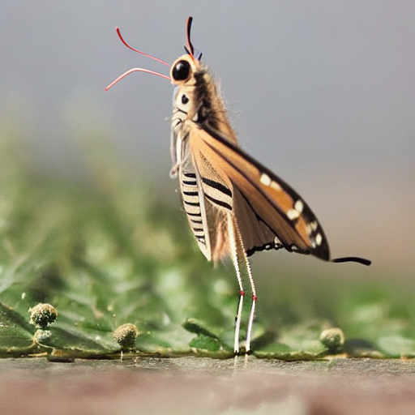
防禦後的編輯
DISTS 目標 0.04 → 實得 0.0391
半徑 1.30596
fid_dists 0.0391
fid_lpips 0.068
fid_psnr 35.6378
fid_ssim 0.968
fid_clip_img 0.9967
fid_nima 5.5204
fid_cnniqa 0.7121
edit_lpips 0.1721
edit_clip_drop 0.0063
edit_siglip_drop-0.0025
amp_dev 0.01381
active_fraction 0.4617
total_seconds 11.5
防禦圖
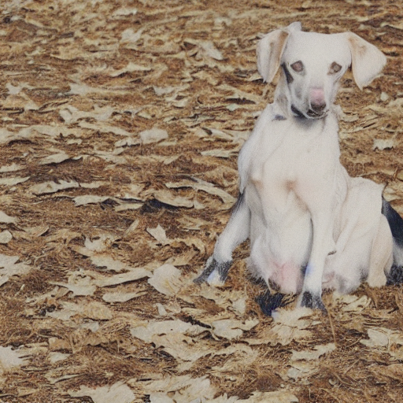
未防禦的編輯
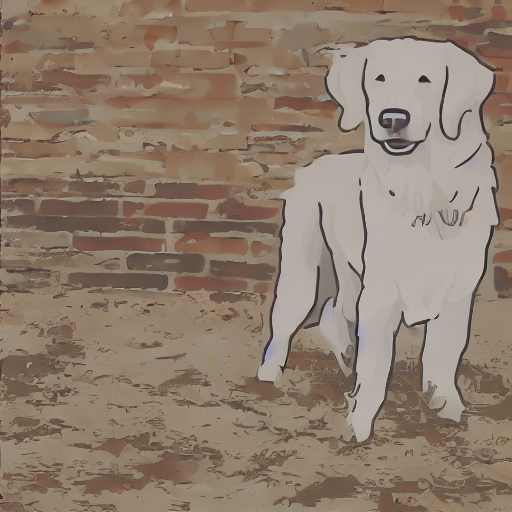
防禦後的編輯
DISTS 目標 0.04 → 實得 0.03828
半徑 0.02126
fid_dists 0.0383
fid_lpips 0.3848
fid_psnr 35.5926
fid_ssim 0.9835
fid_clip_img 0.9862
fid_nima 4.3762
fid_cnniqa 0.6339
edit_lpips 0.6067
edit_clip_drop -0.0308
edit_siglip_drop-0.0014
total_seconds 101.2
防禦圖

未防禦的編輯
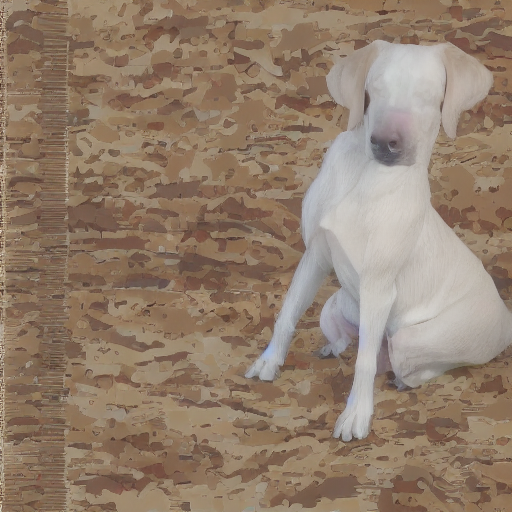
防禦後的編輯
DISTS 目標 0.04 → 實得 0.03922
半徑 1.30596
fid_dists 0.0392
fid_lpips 0.3341
fid_psnr 32.0223
fid_ssim 0.955
fid_clip_img 0.9971
fid_nima 4.4958
fid_cnniqa 0.654
edit_lpips 0.5481
edit_clip_drop -0.0032
edit_siglip_drop0.0042
amp_dev 0.0224
active_fraction 0.5549
total_seconds 102.7
防禦圖

未防禦的編輯
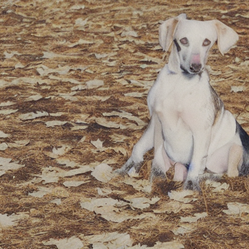
防禦後的編輯
DISTS 目標 0.04 → 實得 0.04025
半徑 1.20935
fid_dists 0.0402
fid_lpips 0.0562
fid_psnr 34.6105
fid_ssim 0.9735
fid_clip_img 0.9976
fid_nima 4.3159
fid_cnniqa 0.5836
edit_lpips 0.1683
edit_clip_drop 0.0004
edit_siglip_drop-0.002
amp_dev 0.0172
active_fraction 0.5549
total_seconds 11.2
防禦圖

未防禦的編輯
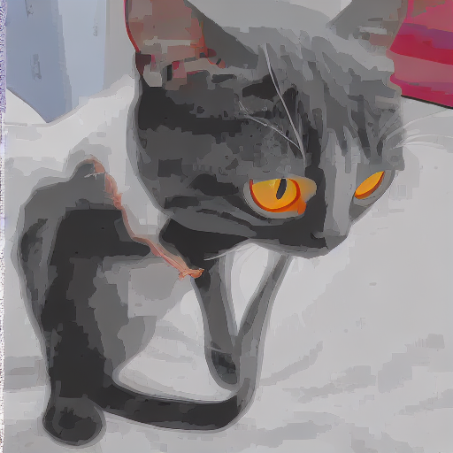
防禦後的編輯
DISTS 目標 0.04 → 實得 0.04112
半徑 0.03091
fid_dists 0.0411
fid_lpips 0.4503
fid_psnr 33.2149
fid_ssim 0.966
fid_clip_img 0.9601
fid_nima 5.057
fid_cnniqa 0.674
edit_lpips 0.6275
edit_clip_drop -0.0322
edit_siglip_drop-0.0108
total_seconds 116.4
防禦圖

未防禦的編輯
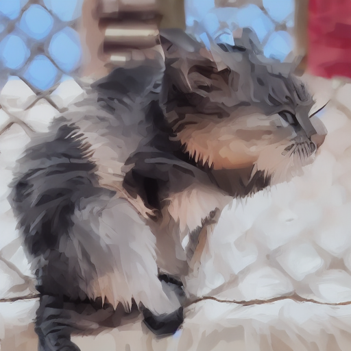
防禦後的編輯
DISTS 目標 0.04 → 實得 0.0393
半徑 1.45088
fid_dists 0.0393
fid_lpips 0.2564
fid_psnr 29.3578
fid_ssim 0.9381
fid_clip_img 0.9878
fid_nima 4.8981
fid_cnniqa 0.6755
edit_lpips 0.5413
edit_clip_drop -0.0178
edit_siglip_drop-0.0145
amp_dev 0.02623
active_fraction 0.4764
total_seconds 118.5
防禦圖

未防禦的編輯
防禦後的編輯
DISTS 目標 0.04 → 實得 0.03956
半徑 1.40257
fid_dists 0.0396
fid_lpips 0.0914
fid_psnr 29.8975
fid_ssim 0.9458
fid_clip_img 0.9878
fid_nima 4.8808
fid_cnniqa 0.622
edit_lpips 0.3953
edit_clip_drop -0.0007
edit_siglip_drop-0.0025
amp_dev 0.02593
active_fraction 0.4764
total_seconds 11.4
防禦圖

未防禦的編輯
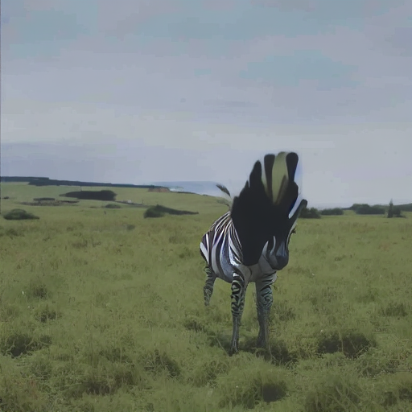
防禦後的編輯
DISTS 目標 0.04 → 實得 0.04089
半徑 0.01354
fid_dists 0.0409
fid_lpips 0.3888
fid_psnr 39.9717
fid_ssim 0.983
fid_clip_img 0.9449
fid_nima 5.9428
fid_cnniqa 0.6903
edit_lpips 0.4055
edit_clip_drop -0.0028
edit_siglip_drop0.0062
total_seconds 101.9
防禦圖
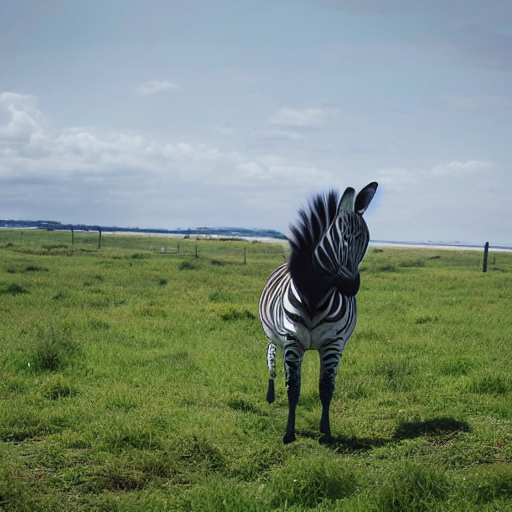
未防禦的編輯
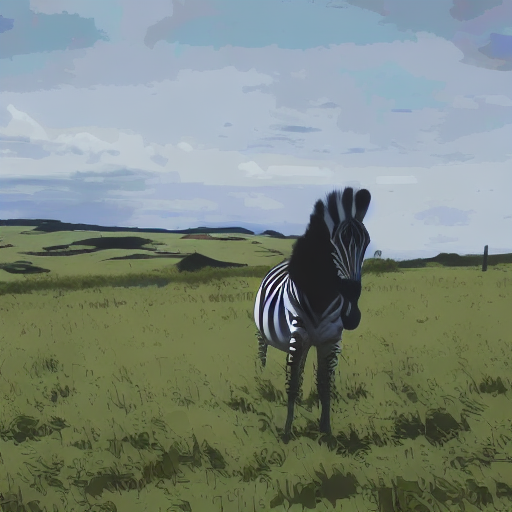
防禦後的編輯
DISTS 目標 0.04 → 實得 0.03874
半徑 1.08858
fid_dists 0.0387
fid_lpips 0.2265
fid_psnr 34.7646
fid_ssim 0.9635
fid_clip_img 0.9926
fid_nima 5.8738
fid_cnniqa 0.6799
edit_lpips 0.4485
edit_clip_drop -0.0172
edit_siglip_drop0.0022
amp_dev 0.01502
active_fraction 0.4655
total_seconds 133.7
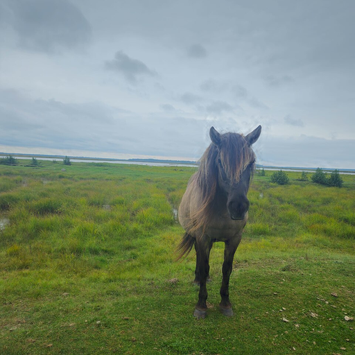
防禦圖

未防禦的編輯
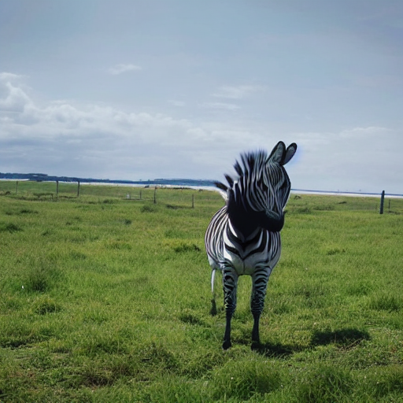
防禦後的編輯
DISTS 目標 0.04 → 實得 0.04118
半徑 1.01612
fid_dists 0.0412
fid_lpips 0.0347
fid_psnr 37.1242
fid_ssim 0.9769
fid_clip_img 0.9959
fid_nima 5.7895
fid_cnniqa 0.6709
edit_lpips 0.0606
edit_clip_drop 0.0039
edit_siglip_drop0.002
amp_dev 0.01269
active_fraction 0.4655
total_seconds 11.4
防禦圖
未防禦的編輯
防禦後的編輯
DISTS 目標 0.04 → 實得 0.0404
半徑 0.01065
fid_dists 0.0404
fid_lpips 0.3543
fid_psnr 42.5787
fid_ssim 0.9881
fid_clip_img 0.9891
fid_nima 4.7226
fid_cnniqa 0.6761
edit_lpips 0.493
edit_clip_drop -0.0345
edit_siglip_drop-0.0135
total_seconds 132.1
防禦圖

未防禦的編輯
防禦後的編輯
DISTS 目標 0.04 → 實得 0.04039
半徑 1.69241
fid_dists 0.0404
fid_lpips 0.1355
fid_psnr 37.8423
fid_ssim 0.9838
fid_clip_img 0.9974
fid_nima 4.4441
fid_cnniqa 0.6752
edit_lpips 0.3479
edit_clip_drop -0.0179
edit_siglip_drop-0.0213
amp_dev 0.00914
active_fraction 0.279
total_seconds 102.9
防禦圖

未防禦的編輯
防禦後的編輯
DISTS 目標 0.04 → 實得 0.04123
半徑 1.40257
fid_dists 0.0412
fid_lpips 0.0541
fid_psnr 38.8822
fid_ssim 0.9851
fid_clip_img 0.9977
fid_nima 4.363
fid_cnniqa 0.6239
edit_lpips 0.2154
edit_clip_drop -0.0188
edit_siglip_drop-0.0102
amp_dev 0.00787
active_fraction 0.279
total_seconds 11.4
防禦圖
未防禦的編輯
防禦後的編輯
DISTS 目標 0.04 → 實得 0.03824
半徑 0.01547
fid_dists 0.0382
fid_lpips 0.3674
fid_psnr 39.843
fid_ssim 0.9793
fid_clip_img 0.9825
fid_nima 4.6847
fid_cnniqa 0.6977
edit_lpips 0.413
edit_clip_drop 0.0044
edit_siglip_drop-0.0122
total_seconds 116.6
防禦圖

未防禦的編輯
防禦後的編輯
DISTS 目標 0.04 → 實得 0.03935
半徑 1.20935
fid_dists 0.0394
fid_lpips 0.1183
fid_psnr 36.3478
fid_ssim 0.9767
fid_clip_img 0.9919
fid_nima 4.7711
fid_cnniqa 0.6839
edit_lpips 0.4229
edit_clip_drop 0.0143
edit_siglip_drop-0.0123
amp_dev 0.0109
active_fraction 0.5233
total_seconds 72.1
防禦圖

未防禦的編輯
防禦後的編輯
DISTS 目標 0.04 → 實得 0.0408
半徑 0.91951
fid_dists 0.0408
fid_lpips 0.0367
fid_psnr 39.1947
fid_ssim 0.9877
fid_clip_img 0.9973
fid_nima 4.6638
fid_cnniqa 0.6835
edit_lpips 0.0625
edit_clip_drop 0.0166
edit_siglip_drop-0.0068
amp_dev 0.00819
active_fraction 0.5233
total_seconds 11.4